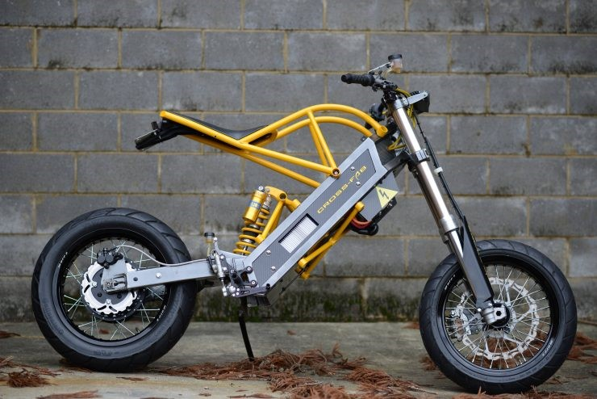

yesMotor
線上檔車資訊網
Explore

機車的cc數代表的是機車引擎的汽缸容量。汽缸是指在內燃機或是外燃機中，讓活塞居於其內，允許其上下往復的容器。汽缸的容積大小被定義為: 汽缸的截面積乘以衝程長度。這也稱之為汽缸的掃氣容積，引擎的排氣量大小則是所有汽缸容積的總和。100cc就是汽缸容量為100立方公分。汽缸容量越大則引擎碼力扭力越大,耗油量也就越大。汽缸容量與馬力和扭力，沒有依定的比例。各個廠家設計值不一定相同。
是一種現今流行的汽車發動機氣門機構。在這種結構中，凸輪軸被放置在汽缸蓋內，燃燒室之上，直接驅動搖臂、氣門，不必通過較長的推桿。與氣門數相同的推桿式發動機（即頂置氣門結構）相比，頂置凸輪軸結構中需要往復運動的部件要少得多，因此大大簡化了配氣結構，顯著減輕了發動機重量，同時也提高了傳動效率、降低了工作噪音。儘管頂置凸輪軸使發動機的結構更加複雜，但是它帶來的更出色的引擎綜合表現（特別是平順性的顯著提高）以及更緊湊的發動機結構，使發動機製造商很快在產品中將廣泛應用這一設計。頂置凸輪軸與頂置氣門結構的驅動方式並不一定不同。動力可以通過正時皮帶、鏈條甚至齒輪組傳遞到頂置的凸輪軸上。分成單頂置凸輪軸（SOHC）和雙頂置凸輪軸（DOHC）。
引擎內部零件-曲軸會連著活塞在汽缸間來回活動 ，有點像是「飛輪」一樣的旋轉，將動力送達各部位讓輪胎能夠滾動，因此基本上活塞數量就等於汽缸數量。順帶一提，排氣量則是指活塞從最下面作動到最上面時所推出的空氣總體積，大家只要回想以前在學校做物理實驗時使用的注射器就會比較容易理解，同樣大的汽缸如果有兩個的話，排氣量自然就會多出一倍。主要分成單、雙、四缸。
現在大多都是四行程引擎的機車，二行程與四行程引擎的差別在於引擎內部曲軸的運轉次數。 四行程的是活塞上下各二次，曲軸旋轉二圈完成一次動力循環，而二行程的是活塞上下各一次， 曲軸旋轉一圈完成一次動力循環。
現在不論手排或自排的最高速檔都是 OD、超速傳動檔，也就是引擎轉速不用很高就可以讓車子跑得很快，譬如說在高速公路行駛到100公里的時速，你看引擎轉速只指在2000多轉的低速。如果這時你鬆油門，同時很快地降檔到3檔，你馬上就會感覺車子會頓一下，而且引擎轉速一下子就拉高到5、6000轉，車速也會很快降低下來，這就是所謂引擎煞車（engine brake）的減速功能。
車子有兩組煞車，一組控制前輪(前煞)，另一組控制後輪(後煞)。而這也是很多人改車型外觀很看重的。
懸吊系統(Suspension)是一種由彈簧、減震筒和連桿所構成的車用系統，用於連接車輛與其車輪，一台車輛的前輪與後輪懸吊設計有可能會使用不同設計。懸吊系統扮演雙重的角色，讓車輛的操控與煞車合乎良好的動態安全與操駕樂趣，並保持車主的舒適性及隔絕適當的路面噪音、彈跳與震動。這些特性通常都互相牽制，因此懸吊的調整就必須找到兩者兼顧的設定。懸吊系統同時也保護車輛本身或車上的貨物行李，避免因顛簸而損壞或磨耗。
外殼是外型上的一大部分，很多車種內部硬體設備相同，但外殼不同就有整台車都改變的感覺。座高會決定每個人的身高、腿長適合的車種。 車架與外殼有密切的關聯，通常車殼只適用在相對應的車架上。
